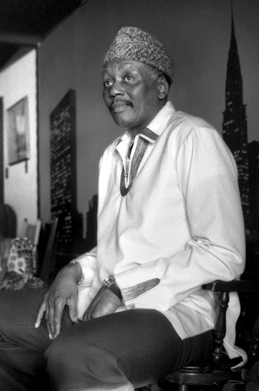

·
In his own words
Smithsonian Jazz Oral History, 2009
In the autumn of 2009 he sat down with Willard Jenkins and talked about music, Africa, his family and the road. Choose a subject to hear him on it.
Journeys
Where the music took him
From the mountains of Morocco to a shrine in Kyoto: the places he played and the people he found there, as he told them.
Records
What the titles mean
Every record under his name
Compositions
His tunes in other hands
Choose a tune to see who recorded it. The count is a floor: only records with an English Wikipedia article were read.
Who he spoke of
People in his story
Who spoke of him
In other people’s oral histories
Relationships
The people on this page, linked
Choose a name to go to what was said. See him in the full Linked Jazz network